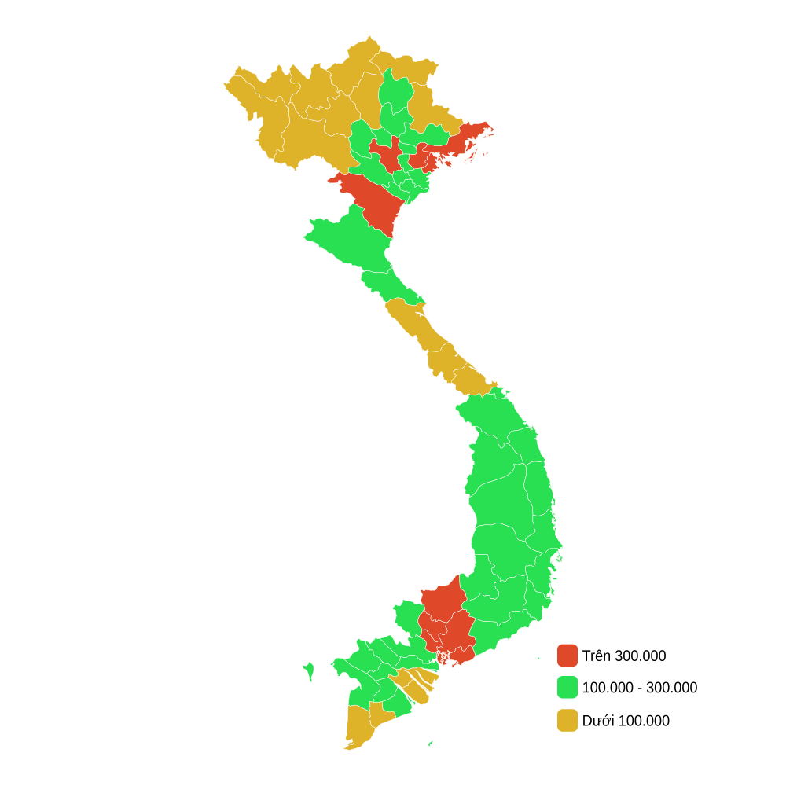

Chào mừng bạn đến với trang nội dung số của nhóm 2
Nghiên cứu & tổng hợp thực trạng nguồn lao động, tình hình sử dụng lao động và vấn đề việc làm tại Thành phố Hồ Chí Minh.
👥 NGUỒN LAO ĐỘNG
- TP.HCM có nguồn lao động đông, tập trung nhiều lao động trẻ.
- Lao động hoạt động chủ yếu trong ngành công nghiệp và dịch vụ.
- Trình độ chuyên môn của lực lượng lao động ngày càng được nâng cao.
- Nhu cầu về lao động có tay nghề và kỹ năng công nghệ ngày càng lớn.
⚙️ SỬ DỤNG LAO ĐỘNG
Chiếm tỷ trọng nhỏ, chủ yếu tập trung ở các khu vực ngoại thành.
Tập trung chủ yếu tại các khu công nghiệp, khu chế xuất trọng điểm.
Phát triển mạnh mẽ, thu hút lượng lớn lao động trong các lĩnh vực thương mại, vận tải, tài chính, giáo dục, du lịch,...
💼 THỰC TRẠNG VIỆC LÀM
Thị trường lao động mở ra nhiều cơ hội nhờ quy mô kinh tế lớn của TP.HCM.
4,73 triệu người có việc làm
Thành phố đã giải quyết khoảng 329.687 lượt việc làm, trong đó tạo ra 150.046 việc làm mới.
⚠️ Tuy nhiên, vẫn còn một bộ phận lao động chưa tìm được việc làm ổn định.
💰 THU NHẬP VÀ SỰ PHÂN HÓA
Bản đồ GRDP của khắp cả nước vào năm 2024

*Bản đồ trên đã thực hiện theo quy định sau 1/7/2025 nhưng bị lỗi về ranh giới*
⚠️ NHỮNG VẤN ĐỀ CẦN QUAN TÂM
- Chất lượng lao động giữa các nhóm chưa thực sự đồng đều.
- Một số lao động chưa đáp ứng đủ yêu cầu về chuyên môn và kỹ năng thực hành.
- Việc làm ở một số ngành nghề có tính ổn định chưa cao.
- Thu nhập giữa khu vực thành thị – nông thôn và các vùng vẫn còn sự chênh lệch.
- Công nghệ và tự động hóa đang làm thay đổi nhanh chóng nhu cầu tuyển dụng.
🌱 GIẢI PHÁP
📊 BÁO CÁO THỐNG KÊ NGUỒN LAO ĐỘNG VIỆT NAM
TỔNG LỰC LƯỢNG LĐ (15+)
Tăng ổn định ⇡TỶ LỆ THAM GIA LLLĐ
LAO ĐỘNG CÓ VIỆC LÀM
+500N so với năm trướcTHU NHẬP BQ/THÁNG
Cơ cấu lao động có việc làm
Cả 2 khu vực Thành thị và Nông thôn đều ghi nhận xu hướng tăng.
Tỷ lệ lao động chính thức & phi chính thức
TỶ LỆ THẤT NGHIỆP
2,28%
TỶ LỆ THIẾU VIỆC LÀM
1,85%
LĐ KHÔNG SỬ DỤNG HẾT TIỀM NĂNG
4,4%
*Nguồn dữ liệu: Tổng cục Thống kê Việt Nam (GSO) - Số liệu tổng hợp cả năm 2024
📝 BÁO CÁO NGẮN CỦA NHÓM
Qua tìm hiểu, nhóm chúng em nhận thấy Việt Nam có nguồn lao động dồi dào, trong đó công nghiệp và dịch vụ ngày càng giữ vai trò quan trọng. Tại TP.HCM, thị trường lao động có quy mô lớn, tạo ra nhiều cơ hội việc làm nhưng vẫn còn tình trạng thất nghiệp và việc làm chưa ổn định. Bên cạnh đó, thu nhập của người lao động có sự phân hóa giữa các vùng. Vì vậy, cần chú trọng đào tạo nghề, nâng cao chất lượng lao động, tạo thêm việc làm ổn định và phát triển kinh tế ở những khu vực còn khó khăn.